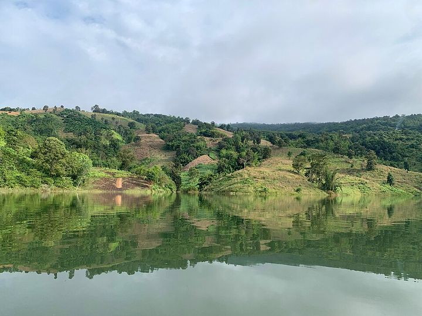
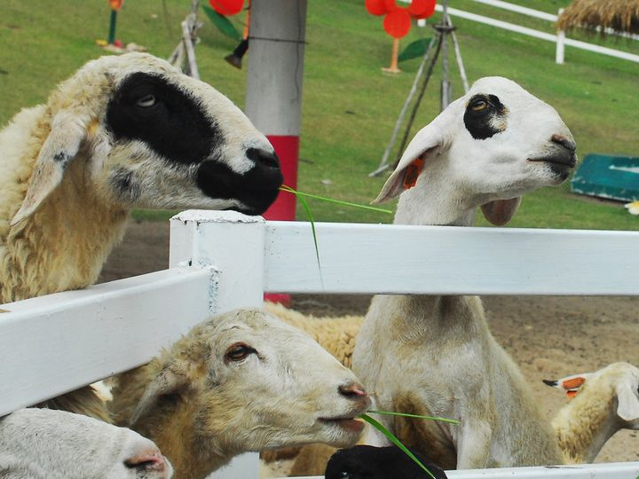
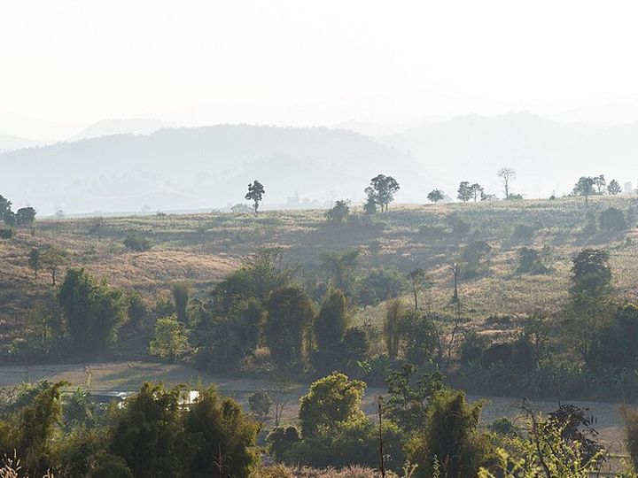
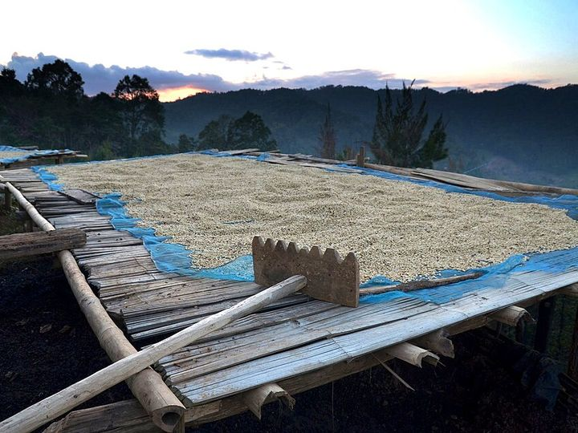
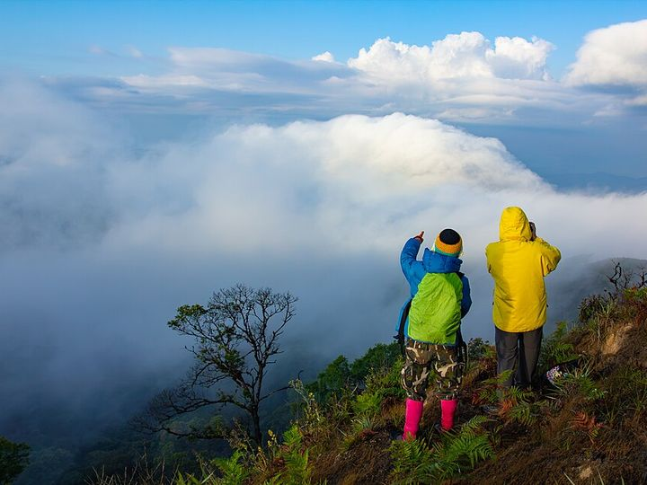
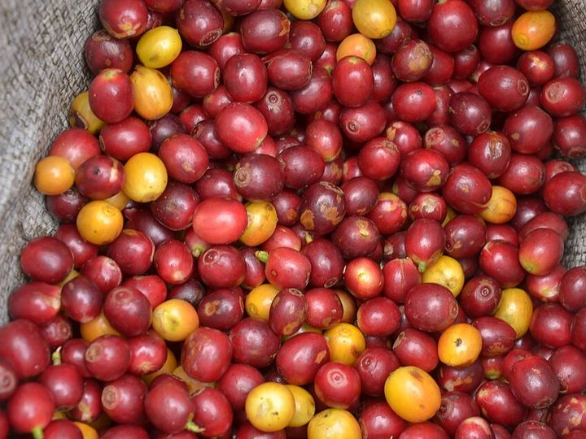
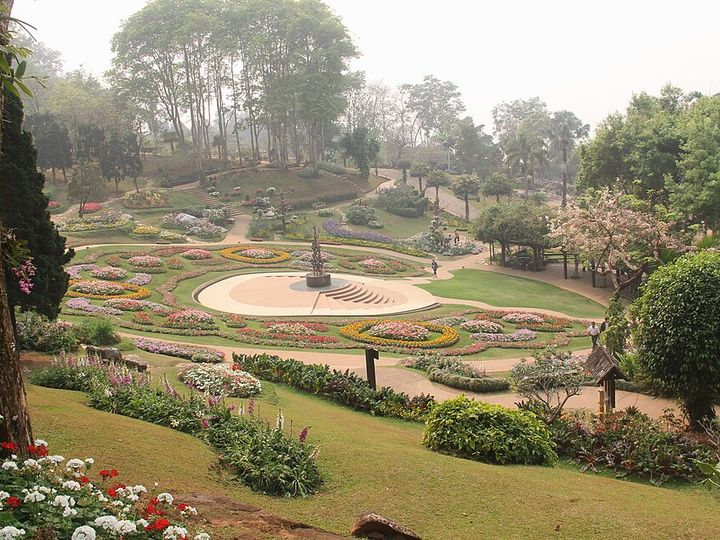
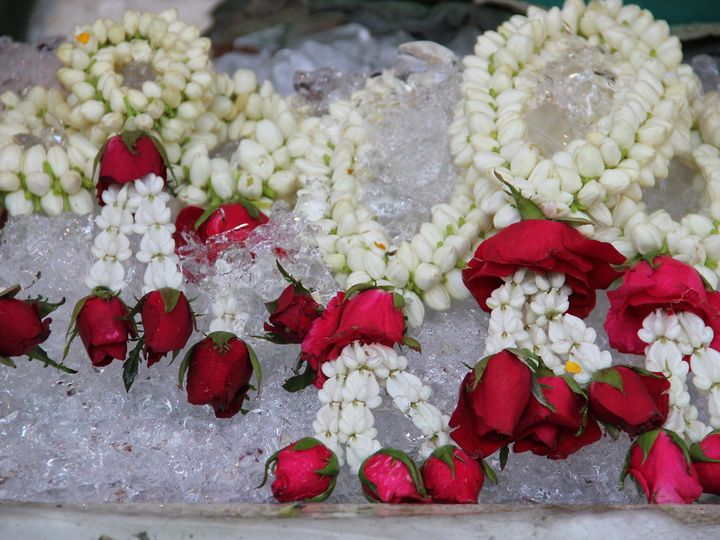

เส้นทางของเรา 7 จุด วนเป็นวงเดียว
ขึ้นดอยทางเขื่อนแม่สรวย ลงทางห้วยส้าน ไม่ย้อนทาง
แตะรูปเพื่อดูรายละเอียดและนำทาง- สนามบินเชียงราย08:40 · จบ 19:00สนามบินเชียงรายรับรถ คืนรถ
- สิงห์ปาร์ค1 · 10:05สิงห์ปาร์คไร่ชา ทุ่งดอกไม้ ยีราฟ

เขื่อนแม่สรวย2 · 14:15เขื่อนแม่สรวยอ่างน้ำสะท้อนภูเขา
Akha Farmville3 · 15:30อาข่าฟาร์มวิลล์ฟาร์มแกะบนสันเขา
Yayo Farm4 · 16:45ยาโยฟาร์มชิงช้า พระอาทิตย์ตก
ดอยช้าง (พัก 1 คืน)18:00ที่พักบนดอยช้างพัก 1 คืน
ผาหัวช้าง5 · 06:05 วันที่ 2ผาหัวช้างพระอาทิตย์ขึ้น ทะเลหมอก
ร้านกาแฟดอยช้าง6 · 09:10ร้านกาแฟดอยช้างอาราบิกาจากต้นทาง
สวนดอกไม้ห้วยส้าน7 · 10:35ศูนย์วิจัยเกษตรที่สูงไม้ดอกเมืองหนาว
งานแต่ง อ.แม่ใจ15:00อ.แม่ใจ (งานแต่งงาน)ถึงงาน 14:30
ก่อนขับ ให้ปักหมุดที่อยู่งานแต่งและที่พักจริงใน Google Maps อีกครั้ง
- บินจากดอนเมือง
- ถึงเชียงราย รับรถเช่า
- ขับ 35 นาที
- สิงห์ปาร์ค ไร่ชา ทุ่งดอกไม้ กินกลางวัน
- ทาง 118 ไปแม่สรวย 1 ชม.
- เติมน้ำมันเต็มถังที่แม่สรวย
- เขื่อนแม่สรวย ถ่ายรูป 20 นาที
- ขึ้นดอยทาง 5047 · 55 นาที
- อาข่าฟาร์มวิลล์ ฟาร์มแกะ
- ยาโยฟาร์ม ชิงช้า พระอาทิตย์ตก
- เช็กอินที่พักดอยช้าง มื้อเย็น
รายละเอียดและมุมถ่ายรูป
รับรถเช่า 08:40–09:30
ถ่ายรูปรอบคันก่อนออกรถ เลือกรถเครื่อง 1.5 ลิตรขึ้นไป เพราะทางขึ้นดอยช้างชัน
1สิงห์ปาร์ค · 10:05–12:45
เปิด 09:00–18:00 · เข้าฟรี · รถราง 150 บาท/คน
นั่งรถรางรอบ 10:15 ผ่านไร่ชา ทุ่งดอกไม้ โซนยีราฟ แล้วกินกลางวันในสิงห์ปาร์คตั้งแต่ 12:00
มุมถ่ายรูป แนวไร่ชาจากบนเนิน แสง 10:00–11:00 ทำให้ไร่ชาเขียวสด
ท่าคู่ จับมือเดินกลางร่องชา ถ่ายจากเนินที่สูงกว่า
2เขื่อนแม่สรวย · 14:15–14:35
ไม่มีค่าเข้า
มุมถ่ายรูป ถ่ายจากสันเขื่อนให้ผิวน้ำสะท้อนเงาภูเขา
ขึ้นดอยต่อทาง 5047 แวะจุดชมวิว กม.5+475 ได้ 5 นาที
3อาข่าฟาร์มวิลล์ · 15:30–16:30
ค่าเข้าเล็กน้อย หรือซื้อเครื่องดื่ม
ให้อาหารแกะใกล้ๆ คาเฟ่วิวภูเขาพาโนรามา
มุมถ่ายรูป ฝูงแกะบนเนินหญ้า มีทิวเขาซ้อนกันด้านหลัง
4ยาโยฟาร์ม · 16:45–17:50
ซื้อเครื่องดื่ม · ชิงช้าอาจคิดค่าเล่น · พระอาทิตย์ตกราว 17:45
มุมถ่ายรูป นั่งชิงช้าย้อนแสงเป็นเงาดำ ใช้ลูกบอลแก้วสะท้อนภูเขา
ท่าคู่ แสงย้อนสีทอง หันหน้าเข้าหากัน
คาเฟ่บนดอยมักปิด 17:30–18:00 โทรเช็กก่อน
ที่พักดอยช้าง · 18:00
เลือกที่พักหันทิศตะวันออก เช่น Misty Valley Doichang หรือบ้านสวนดอยช้าง กลางคืน 8–14°C
- ออกจากที่พัก ขับ 20 นาที
- ผาหัวช้าง พระอาทิตย์ขึ้น ทะเลหมอก
- อาหารเช้า เก็บของ
- ร้านกาแฟดอยช้าง ไร่กาแฟ
- ศูนย์วิจัยเกษตรที่สูง แปลงดอกไม้
- ลงดอย ไปพาน 1 ชม. 15 นาที
- มื้อกลางวันที่พาน
- เปลี่ยนชุดที่แม่ใจ ถึงงาน 14:30
- ร่วมงานแต่งงาน ที่แม่ใจ
- ออกจากงาน ไปสนามบิน 1 ชม. 30 นาที
- เติมน้ำมัน คืนรถ เช็กอิน
- บินกลับกรุงเทพฯ
รายละเอียดและมุมถ่ายรูป
5ผาหัวช้าง · 06:05–07:15
ไม่มีค่าเข้า · พระอาทิตย์ขึ้นราว 06:30–06:45 · เช้ามืด 6–10°C
ขับช้าๆ ทางมืด ถามทางและที่จอดรถจากที่พักไว้ตั้งแต่คืนแรก
มุมถ่ายรูป ช่วงฟ้าส้มอมชมพู 10 นาทีก่อนพระอาทิตย์โผล่ ซูมดึงชั้นภูเขากับหมอก
ท่าคู่ ห่มผ้าผืนเดียวกันนั่งริมผา ถ่ายจากด้านหลัง
เช็กเอาต์ · 07:15–09:00
แขวนชุดงานแต่งไว้ในรถ ไปเปลี่ยนที่แม่ใจ
6ร้านกาแฟดอยช้าง · 09:10–10:10
กาแฟแก้วละ 60–120 บาท
ชิมอาราบิกาจากต้นทาง เดินในไร่กาแฟ ซื้อเมล็ดคั่วเป็นของฝาก
มุมถ่ายรูป ผลกาแฟสีแดงบนต้น (พ.ย.–ก.พ.) แก้วกาแฟกับวิวภูเขาเบลอ
7ศูนย์วิจัยเกษตรที่สูง ห้วยส้าน · 10:35–11:15
อยู่บนทางลงสายห้วยส้านพอดี ลงดอยด้วยเกียร์ต่ำ (L หรือ 2) อย่าแตะเบรกค้าง
วันหยุดอาจไม่เปิดให้ชม ถ้าปิดให้ผ่านไปเลย ได้เวลาเผื่อเพิ่ม 40 นาที
ไปงานแต่ง · 11:15–14:30
ทาง 118 ต่อทาง 1 ลงใต้ถึงพาน (60 กม.) กินกลางวัน เติมน้ำมันครึ่งถัง แล้วไปแม่ใจ (35 กม.) เปลี่ยนชุดที่ปั๊ม เผื่อเวลา 30 นาที
กลับสนามบิน · 17:15–20:50
ทาง 1 ขึ้นเหนือ 100 กม. ประมาณ 1 ชม. 30 นาที ช่วงเย็นรถติดในเมือง คืนรถ 19:00 เคาน์เตอร์ปิดราว 20:10 เหลือเวลาเผื่อประมาณ 50 นาที
ตั้งนาฬิกาปลุก 17:00 ออกจากงานช้าสุด 17:30
ไฮไลต์ทริปนี้
- ไร่ชาและทุ่งดอกไม้ สิงห์ปาร์ค
- ฟาร์มแกะ อาข่าฟาร์มวิลล์
- ชิงช้าพระอาทิตย์ตก ยาโยฟาร์ม
- ทะเลหมอกยามเช้า ผาหัวช้าง
- กาแฟอาราบิกา ดอยช้าง
- ร่วมงานแต่งที่แม่ใจ
งบประมาณของเรา
กำลังโหลด…
แตะชื่อหรือตัวเลขเพื่อแก้ได้เลย ระบบบันทึกให้อัตโนมัติ
เช็กก่อนออกเดินทาง
จุดที่ตัดออก และเหตุผล
- ไร่ชาฉุยฟง อยู่เหนือเมือง 45 กม. ต้องย้อนกลับ เพิ่ม 1 ชม. 30 นาที
- บ้านดำ อยู่เหนือสนามบิน ต้องขับย้อน ถึงดอยช้างไม่ทันแสงเย็น
- บ่อน้ำพุร้อนแม่ขะจาน คนละทิศกับดอยช้าง เพิ่ม 50 นาที
- กว๊านพะเยา อยู่เลยแม่ใจลงใต้ เสี่ยงตกเครื่อง
- ภูชี้ฟ้า, ดอยแม่สลอง คนละทิศ ไปทางเดียว 2 ชม. 30 นาทีขึ้นไป